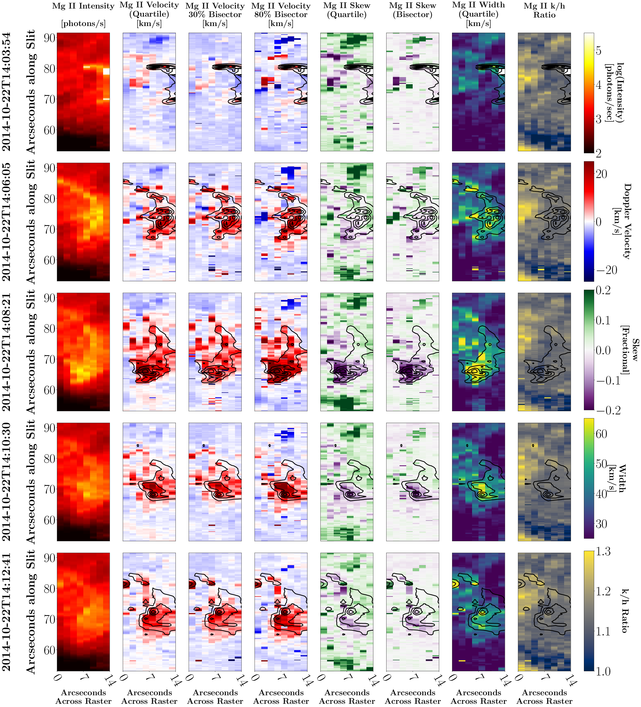
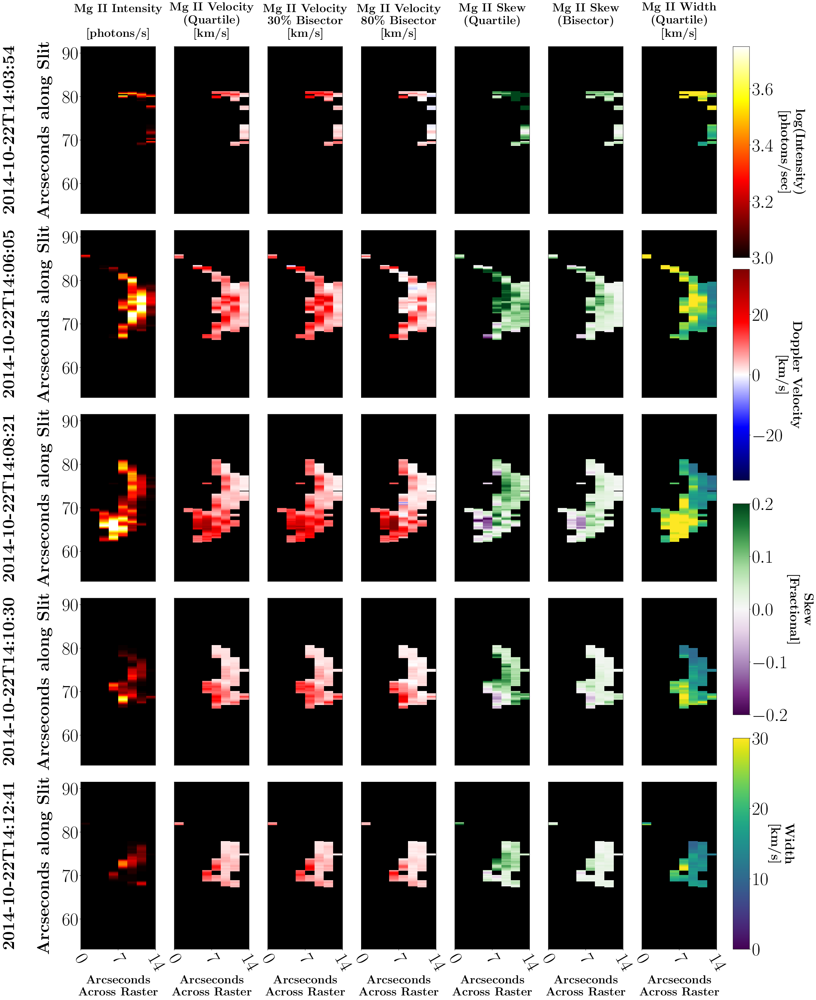
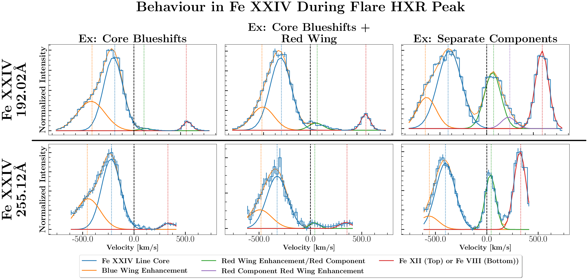

Call and Response: A Time-resolved Study of Chromospheric Evaporation in a Large Solar Flare
On this page, you'll find additional information from this paper that were either cut for length, or otherwise did not make publication. This page is periodically updated as I find, remember, or make more figures. In the meantime, behold, a movie of the event in AIA, IRIS, and EIS!
Mg II Data
This figure shows the behaviour of the Mg II k line (the h line is more or less identical). The analysis shown is a mixture of bisector and quartile analysis of this line. Axes of each individual panel are given in arcseconds across the FOV, rather than the solar position, as the spacecraft was tilted 45 degrees on this date. Intensity, measures of Doppler velocity, the skew of the line (i.e., the relative strength of the blue/red wing), linewidth, and the ratio of the k/h intensities. This line ratio indicates that throughout the event, the k-line is formed in an optically-thick plasma where radiative processes are not responsible for enhanced intensities, implying that intensity enhancements are indicative of increased electron density. Note that elevated levels of intensity, skew, and velocity progress across the field-ov-view throughout time. This indicates the progression of the location of electron deposition throughout the event. Compare this to the behaviour of the subordinate Mg II triplet lines: 
The Mg II subordinate triplet is an absorption line except during flares, hence the lower intensities, and absence of emission outside a compact kernel. Compared to the Mg II k line, there is far less skew observed in the subordinate triplet lines, with a negative skew occurring only in the very core of flare regions. Blue wing enhancements (negative skew) are sometimes thought to be the result of a redshifted absorption profile damping the red wing of the main line. This is likely the case here, possibly the result of the quiescent self-absorption core found in Mg II k, which is absent from flare emission. The presence of strong skew in the k-line that is absent in the subordinate triplet may suggest that the self-absorption core may be responsible for the difference in skew.
Fe XXIV Bonus Plot
The Fe XXIV lines were quite dramatic during this event. Blueshifts to the line core exceeded 200 km/s, with a further blue wing enhancement, as discussed in the main paper. However, in a very few cases, the behaviour of the Fe XXIV line became yet more complicated. The above figure shows nonstandard Fe XXIV emission profiles for both the 192.02 and 255.12 lines. Each column shows different profiles extracted from the same location during the 14:06UT raster. The top row is 192.02, the bottom is 255.12. The left-hand column shows the "simple" case during the 14:06 (flare peak) raster; a strong blueshifted core, a blue-wing enhancement, and the occasional blend line (Fe XII for the 192.02 wavelength window, Fe VIII for the 255.12 wavelength window). The middle column is the rarer, slightly more complicated case, where both lines have a red/stationary component significantly weaker than the blueshifted main component. Likely this is a looptop source. The right-hand column is the complicated case, with a fully separated and distinct profile redshifted relative to the reference wavelength. It is important to note that these profiles are extracted from the same 1 arcsecond x 3 arcsecond region, and that, crucially, the two different lines used different, independant methods of determining the reference wavelength. That the resultant profiles are identical in velocity-space indicates that the several components of the line complex are both real, and originate from the Fe XXIV line complex, which must be experiencing a stratified flow structure with not one or two, but several different components.